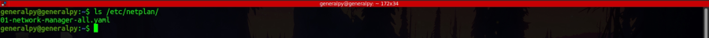
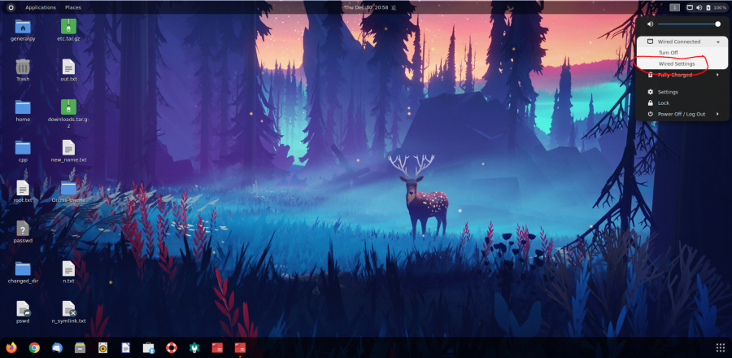
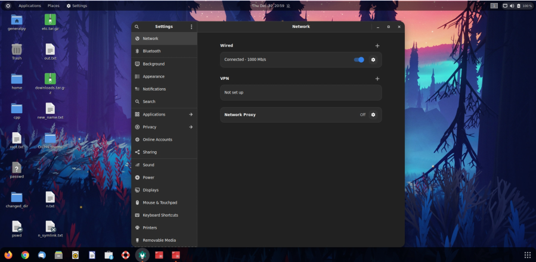
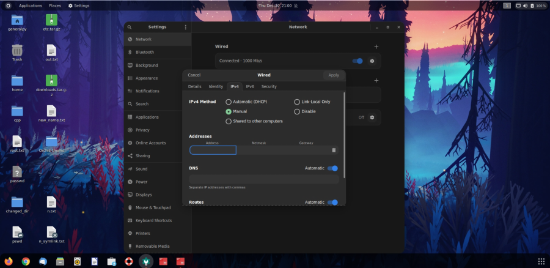
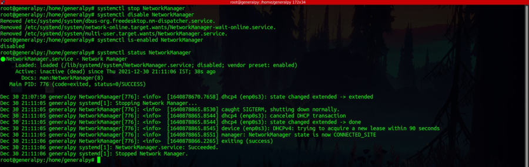
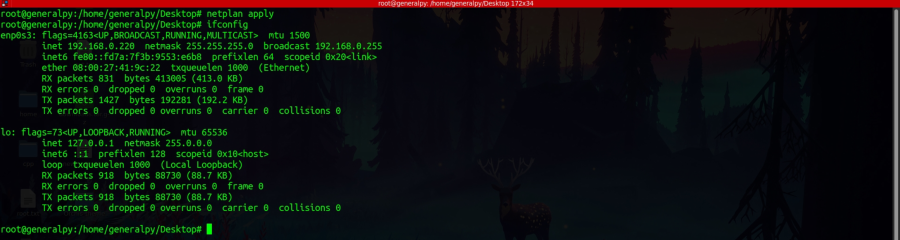

netplan is used to configure static network settings in ubuntu after ubuntu 17.10.

yaml files in netplan directory holds the configurations.
The netplan uses two renderers or backends to manage network : network manager which is used in desktop(gui) environment and networkd and systemd which are used in devices without gui(like servers).
Changing network config using network manager renderer is easy as it is done by gui.
1. Click on network settings icon available in top right of the sytem.
'
2. A window like below will open, click on gear icon in front of network enable switch.

3. A window like below will appear. Go to ipv4 or ipv6 tab according to your lan config and then click on manual radio button and enter the required details. Click on apply when done.

To change settings when gui is not available(using systemd and networkd renderer).
Network Manger and networkd are used to change network config but they cannot work at the same time so we have to disable Network Manager.
We first stopped the network manager service and then disabled it so that it doesn't start on boot and interfere with our current networkd config.

If we don't use NetworkManager anymore, it is recommended to move existing config file from the /etc/netplan directory.
We then have to create our own yaml file inside /etc/netplan. Use meaningful names like 01-netconfig.yaml. Note that yaml files use 2 spaces for indentations, so mind spaces carefully. Use yaml verifiers to check validity of yaml file if you have a doubt.
netplan files must have 3 components.
network:
version:
renderer:
devices:
The netplan yaml file begins with network keyword then we have version used, renderer used and then devices which can be ethernets in case of ethernet or wifis in case of wifi(idk about others rn). Sample netplan config.
network:
version: 2
renderer: networkd
ethernets:
enp0s3:
dhcp4: false
addresses:
- 192.168.0.220/24
gateway4: "192.168.0.1"
nameservers:
addresses:
- "8.8.8.8"
- "4.4.4.4"
Above file is of v2 and uses networkd as renderer. We defined ethernet properties on our enp0s3 interface, dhcp is false, ip address is 192.168.0.220 with subnet mask of 24, gateway is 192.168.0.1, and we have dns servers under addresses.
To apply the config, we use netplan apply command.

If we want to use dhcp using above file, just set dhcp4 as true and remove all parameters below dhcp4.